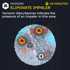

消灭穿刺虫
“地壳扰动显示该区域存在穿刺虫。
— 任务简报
消除 穿刺虫 is a 任务 in 绝地潜兵 2. To 完成 the 目标 绝地潜兵 must 消除 the specified 穿刺虫
目标步骤
消灭穿刺虫
- 找到穿刺虫
- 绝地潜兵 must find the 穿刺虫. They can be found near the big red circles near the 目标 point.
- 消除 穿刺虫 [0/1]
- 绝地潜兵 must now dispatch the 穿刺虫.
战术信息
- For information about the best ways of dispatching this 类型 of enemy, see 其页面
各难度地图

困难难度